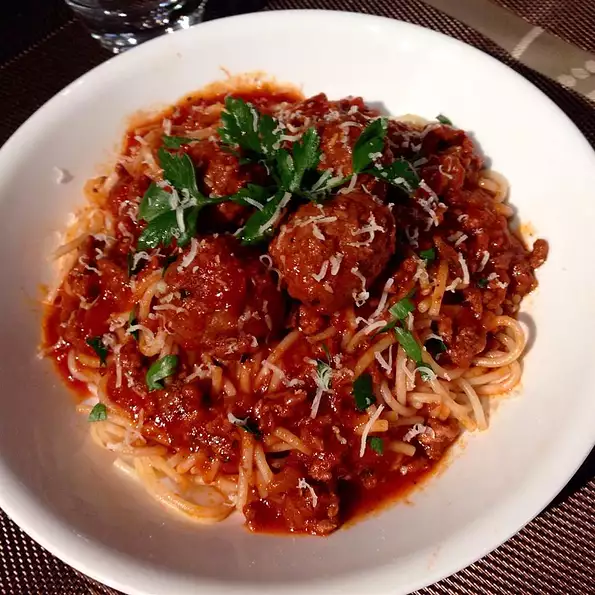

Filipino Spaghetti

The difference between Italian spaghetti and Filipino spaghetti is the addition of banana ketchup, which makes this a rather sweet dish. Oh, and I almost forgot the hot dogs!
Ingredients
- 2 pounds spaghetti
- 2 1 tablespoon vegetable oil
- 1 head garlic, minced
- 1 onion, chopped
- 1 pound ground beef
- 1 pound ground pork
- salt and pepper to taste
- 1 (26.5 ounce) can spaghetti sauce
- 1 (14 ounce) jar banana ketchup
- ¼ cup white sugar
- ½ cup water
- 1 pound hot dogs, sliced diagonally
- ½ cup shredded Cheddar cheese